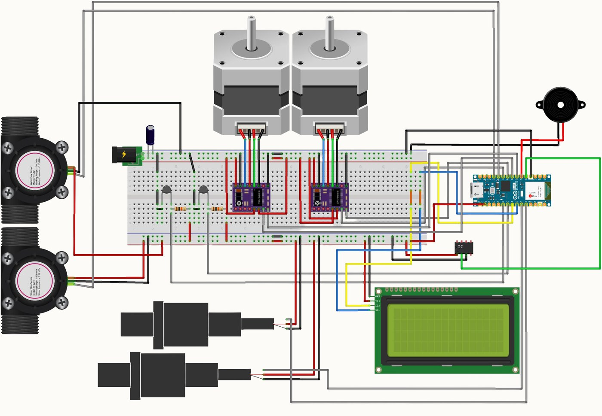

Control Engineer, Project Nephros
Produced the schematic the team now works from, covering all five subsystems of a student haemodialysis unit in Fritzing: thermistors, pressure and flow sensors, stepper drivers, pumps and the LCD.
Moved fault detection from post-run to mid-cycle with MicroPython firmware that polls the sensors on a fixed cycle, smooths the signal, and flags any out-of-range temperature or pressure.
Carried the build through to a working machine exhibited at two showcases, holding the bill of materials and settling interfaces across three sub-teams.
